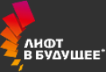
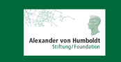
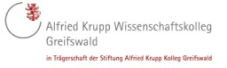

Инструкция пользователя
Обратная связь
Личный кабинет
Навигатор фондов
Открытые данные
Карта фондов
RSI
Инструкция пользователя
Обратная связь
Личный кабинет
Агрегатор информации о грантовой поддержке исследователей
Навигатор фондов
Открытые данные
Карта фондов
RSI
Главная
Навигатор фондов
Главная
Навигатор фондов
Формы поддержки фондом:
По стадиям жизненного цикла проекта
Все стадии
1
Исследования
2
Разработки
3
Производство
4
Рынок
Доступ к научно-исследовательской инфраструктуре (ЦКП, УНУ, суперкомпьютерные центры)
Доступ к ресурсным коллекциям, научному оборудованию для медицинских исследований
Доступ к информационным библиотечным и архивным, музейным ресурсам, находящимся в закрытом доступе и предоставляющими платные услуги
Поддержка академической мобильности /адресная поддержка ученых
Поддержка проектов с участием студентов, аспирантов
Доведение до всеобщего сведения (публикации) научных трудов
Менторство над научными командами
Поддержка проведения фундаментальных и прикладных научно-исследовательских работ
Поддержка научных экспедиций
Поддержка фундаментальных научных проектов международного сотрудничества
Поддержка проведения фундаментальных региональных исследований
Организация научно-популярных мероприятий
Премиальная поддержка за достижения в различных областях наук
Поддержка научных проектов молодых ученых, постдоков
Доступ к зарубежным патентным системам (патентное картирование, патентный ландшафт) / доступ к закрытым информационным базам данных в сфере науки и технологий
Доступ к отраслевым исследовательским и технологическим центрам, отраслевым лабораториям, опытно-промышленным площадкам, сервисным центрам, научным организациям, институтам, университетам в целях проведения опытных, опытно/промышленных испытаний
Поддержка программ обмена научными кадрами (ротация)
Поддержка программ по повышению профессиональной подготовки кадров и проведение стажировок
Поддержка патентования, защиты авторских/смежных прав
Поддержка опытно - конструкторских разработок и поисковых исследований (гранты, софинансирование, субсидирование части затрат на проведение НИОКТР, клинических испытаний)
Поддержка прикладных проектов международного сотрудничества
Поддержка проведения прикладных региональных исследований
Поддержка трансляционных исследований
Инжиниринг (работы по проектированию и разработке рабочей документации)
Предоставление услуг по поиску технологий
Поддержка программ развития технологических платформ
Проведение научной экспертизы, оценка проекта
Поддержка центров молодежного инновационного творчества
Поддержка в области привлечения зарубежных специалистов в части пуска / наладки нового оборудования / технологии
Сертифицирование инновационной продукции
Поддержка проектов малых инновационных предприятий, старт-апов (грант, субсидирование, компенсация процентной ставки, инвестиционный займ)
Поддержка развития комплексных отраслевых/межотраслевых проектов
Доступ к инфраструктуре индустриальных технопарков (организация новых производств, продвижение новых технологий)
Доступ к технической информации при проведении патентных исследований
Масштабирование научно-технического процесса (разработка задания на проектирование опытной установки или партии, проектирование, выпуск опытной партии)
Поддержка программ развития технологических платформ
Поддержка программ по повышению профессиональной подготовки кадров и проведение стажировок
Поддержка внедрения научных, технических и инновационных достижений в образовательные программы
Предоставление софинансирования в рамках создания частно-государственного партнерства
Поддержка выпуска фильмов и мультимедийной продукции
Доступ к ИТ-инфраструктуре (доступ к вычислительным и телекоммуникационным ресурсам, услугам квалифицированных кадров, необходимых для вывода инновационного продукта)
Поддержка программ по повышению квалификации персонала в области коммерциализации инновационного продукта
Консалтинговые услуги
Оказание услуг по вопросам защиты и лицензирования РИД
Поддержка коммерциализации инвестиционного проекта (венчурный займ)
Привлечение потенциальных партнеров
Доступ к инфраструктуре центров трансфера технологий, университетских, сетевых технопарков в целях коммерциализации технологий
Поддержка участия в российских и зарубежных выставочных инновационно - промышленных мероприятиях
Инновационный ваучер
Доступ к информационным ресурсам, услугам специалистов в целях коммерциализации инновационного продукта
По направлениям поддержки проекта
Все направления
1
Инфраструктура
2
Информационные
ресурсы
3
Кадры
4
Управление
результатами
5
Реализация
6
Кооперация
7
Популяризация
Доступ к научно-исследовательской инфраструктуре (ЦКП, УНУ, суперкомпьютерные центры)
Доступ к ресурсным коллекциям, научному оборудованию для медицинских исследований
Доступ к отраслевым исследовательским и технологическим центрам, отраслевым лабораториям, опытно-промышленным площадкам, сервисным центрам, научным организациям, институтам, университетам в целях проведения опытных, опытно/промышленных испытаний
Инжиниринг (работы по проектированию и разработке рабочей документации)
Доступ к инфраструктуре индустриальных технопарков (организация новых производств, продвижение новых технологий)
Доступ к ИТ-инфраструктуре (доступ к вычислительным и телекоммуникационным ресурсам, услугам квалифицированных кадров, необходимых для вывода инновационного продукта)
Масштабирование научно-технического процесса (разработка задания на проектирование опытной установки или партии, проектирование, выпуск опытной партии)
Доступ к инфраструктуре центров трансфера технологий, университетских, сетевых технопарков в целях коммерциализации технологий
Доступ к информационным библиотечным и архивным, музейным ресурсам, находящимся в закрытом доступе и предоставляющими платные услуги
Доступ к зарубежным патентным системам (патентное картирование, патентный ландшафт) / доступ к закрытым информационным базам данных в сфере науки и технологий
Поддержка программ развития технологических платформ
Доступ к технической информации при проведении патентных исследований
Доступ к информационным ресурсам, услугам специалистов в целях коммерциализации инновационного продукта
Поддержка академической мобильности /адресная поддержка ученых
Поддержка проектов с участием студентов, аспирантов
Поддержка в области привлечения зарубежных специалистов в части пуска / наладки нового оборудования / технологии
Поддержка программ обмена научными кадрами (ротация)
Поддержка программ по повышению профессиональной подготовки кадров и проведение стажировок
Поддержка программ по повышению квалификации персонала в области коммерциализации инновационного продукта
Консалтинговые услуги
Поддержка программ по повышению профессиональной подготовки кадров и проведение стажировок
Доведение до всеобщего сведения (публикации) научных трудов
Менторство над научными командами
Поддержка патентования, защиты авторских/смежных прав
Сертифицирование инновационной продукции
Оказание услуг по вопросам защиты и лицензирования РИД
Проведение научной экспертизы, оценка проекта
Поддержка проведения фундаментальных и прикладных научно-исследовательских работ
Поддержка научных экспедиций
Поддержка опытно - конструкторских разработок и поисковых исследований (гранты, софинансирование, субсидирование части затрат на проведение НИОКТР, клинических испытаний)
Предоставление услуг по поиску технологий
Поддержка проектов малых инновационных предприятий, старт-апов (грант, субсидирование, компенсация процентной ставки, инвестиционный займ)
Предоставление софинансирования в рамках создания частно-государственного партнерства
Поддержка коммерциализации инвестиционного проекта (венчурный займ)
Поддержка центров молодежного инновационного творчества
Инновационный ваучер
Поддержка фундаментальных научных проектов международного сотрудничества
Поддержка проведения фундаментальных региональных исследований
Поддержка прикладных проектов международного сотрудничества
Поддержка проведения прикладных региональных исследований
Поддержка развития комплексных отраслевых/межотраслевых проектов
Организация научно-популярных мероприятий
Премиальная поддержка за достижения в различных областях наук
Поддержка внедрения научных, технических и инновационных достижений в образовательные программы
Поддержка трансляционных исследований
Поддержка выпуска фильмов и мультимедийной продукции
Поддержка участия в российских и зарубежных выставочных инновационно - промышленных мероприятиях
Поддержка проектов по отраслям науки:
Биологические науки
Гуманитарные науки
Естественные науки
Искусствоведение
Исторические науки и археология
Культурология
Медицинские науки
Науки о земле
Нейронауки
Педагогические науки
Политология
Психологические науки
Сельскохозяйственные науки
Социологические науки
Технические науки
Физико-математические науки
Филологические науки
Философские науки
Химические науки
Экономические науки
Юридические науки
Тематика конкурсов фонда:
Тематика конкурсов
Территориальная принадлежность фонда:
Абакан
Азов
Александров
Алексин
Альметьевск
Анапа
Ангарск
Анжеро-Судженск
Апатиты
Арзамас
Армавир
Арсеньев
Артем
Архангельск
Асбест
Астрахань
Ачинск
Балаково
Балахна
Балашиха
Балашов
Барнаул
Батайск
Белгород
Белебей
Белово
Белогорск (Амурская область)
Белорецк
Белореченск
Бердск
Березники
Березовский (Свердловская область)
Бийск
Биробиджан
Благовещенск (Амурская область)
Бор
Борисоглебск
Боровичи
Братск
Брянск
Бугульма
Буденновск
Бузулук
Буйнакск
Великие Луки
Великий Новгород
Верхняя Пышма
Видное
Владивосток
Владикавказ
Владимир
Волгоград
Волгодонск
Волжск
Волжский
Вологда
Вольск
Воркута
Воронеж
Воскресенск
Воткинск
Всеволожск
Выборг
Выкса
Вязьма
Гатчина
Геленджик
Георгиевск
Глазов
Горно-Алтайск
Грозный
Губкин
Гудермес
Гуково
Гусь-Хрустальный
Дербент
Дзержинск
Димитровград
Дмитров
Долгопрудный
Домодедово
Донской
Дубна
Евпатория
Егорьевск
Ейск
Екатеринбург
Елабуга
Елец
Ессентуки
Железногорск (Красноярский край)
Железногорск (Курская область)
Жигулевск
Жуковский
Заречный
Зеленогорск
Зеленодольск
Златоуст
Иваново
Ивантеевка
Ижевск
Избербаш
Иркутск
Искитим
Ишим
Ишимбай
Йошкар-Ола
Казань
Калининград
Калуга
Каменск-Уральский
Каменск-Шахтинский
Камышин
Канск
Каспийск
Кемерово
Керчь
Кинешма
Кириши
Киров (Кировская область)
Кирово-Чепецк
Киселевск
Кисловодск
Клин
Клинцы
Ковров
Когалым
Коломна
Комсомольск-на-Амуре
Копейск
Королев
Кострома
Котлас
Красногорск
Краснодар
Краснокаменск
Краснокамск
Краснотурьинск
Красноярск
Кропоткин
Крымск
Кстово
Кузнецк
Кумертау
Кунгур
Курган
Курск
Кызыл
Лабинск
Лениногорск
Ленинск-Кузнецкий
Лесосибирск
Липецк
Лиски
Лобня
Лысьва
Лыткарино
Люберцы
Магадан
Магнитогорск
Майкоп
Махачкала
Междуреченск
Мелеуз
Миасс
Минеральные Воды
Минусинск
Михайловка
Михайловск (Ставропольский край)
Мичуринск
Москва
Мурманск
Муром
Мытищи
Набережные Челны
Назарово
Назрань
Нальчик
Наро-Фоминск
Находка
Невинномысск
Нерюнгри
Нефтекамск
Нефтеюганск
Нижневартовск
Нижнекамск
Нижний Новгород
Нижний Тагил
Новоалтайск
Новокузнецк
Новокуйбышевск
Новомосковск
Новороссийск
Новосибирск
Новотроицк
Новоуральск
Новочебоксарск
Новочеркасск
Новошахтинск
Новый Уренгой
Ногинск
Норильск
Ноябрьск
Нягань
Обнинск
Одинцово
Озерск (Челябинская область)
Октябрьский
Омск
Орел
Оренбург
Орехово-Зуево
Орск
Павлово
Павловский Посад
Пенза
Первоуральск
Пермь
Петрозаводск
Петропавловск-Камчатский
Подольск
Полевской
Прокопьевск
Прохладный
Псков
Пушкино
Пятигорск
Раменское
Ревда
Реутов
Ржев
Рославль
Россошь
Ростов-на-Дону
Рубцовск
Рыбинск
Рязань
Салават
Сальск
Самара
Санкт-Петербург
Саранск
Сарапул
Саратов
Саров
Свободный
Севастополь
Северодвинск
Северск
Сергиев Посад
Серов
Серпухов
Сертолово
Сибай
Симферополь
Славянск-на-Кубани
Смоленск
Соликамск
Солнечногорск
Сосновый Бор
Сочи
Ставрополь
Старый Оскол
Стерлитамак
Ступино
Сургут
Сызрань
Сыктывкар
Таганрог
Тамбов
Тверь
Тимашевск
Тихвин
Тихорецк
Тобольск
Тольятти
Томск
Троицк
Туапсе
Туймазы
Тула
Тюмень
Узловая
Улан-Удэ
Ульяновск
Урус-Мартан
Усолье-Сибирское
Уссурийск
Усть-Илимск
Уфа
Ухта
Феодосия
Фрязино
Хабаровск
Ханты-Мансийск
Хасавюрт
Химки
Чайковский
Чапаевск
Чебоксары
Челябинск
Черемхово
Череповец
Черкесск
Черногорск
Чехов
Чистополь
Чита
Шадринск
Шали
Шахты
Шуя
Щекино
Щелково
Электросталь
Элиста
Энгельс
Южно-Сахалинск
Юрга
Якутск
Ялта
Ярославль
Найти фонды
Сбросить
Найдено фондов:
123

Некоммерческое партнерство содействия развитию интеллектуального и творческого потенциала молодежи «Лифт в будущее» Благотворительного фонда "Система" (НП "Лифт в будущее")
город
Москва

Alexander von Humboldt Foundation
город
Новогород

Alfried Krupp Kolleg Greifswald Foundation
город
Москва
Foundation Banque de France
кол-во конкурсов
88
кол-во проектов
25
French Network of Institutes for Advanced Study (RFIEA)
кол-во конкурсов
49
кол-во проектов
5
Gates Foundation
кол-во конкурсов
37
кол-во проектов
8
Alexander von Humboldt Foundation
кол-во конкурсов
85
кол-во проектов
14
Alfried Krupp Kolleg Greifswald Foundation
кол-во конкурсов
66
кол-во проектов
12
Некоммерческое партнерство содействия развитию интеллектуального и творческого потенциала молодежи «Лифт в будущее» Благотворительного фонда "Система" (НП "Лифт в будущее")
кол-во конкурсов
91
кол-во проектов
15
Gates Foundation
кол-во конкурсов
37
кол-во проектов
8
Foundation Banque de France
кол-во конкурсов
88
кол-во проектов
25
French Network of Institutes for Advanced Study (RFIEA)
кол-во конкурсов
49
кол-во проектов
5
1
2
...
13
14